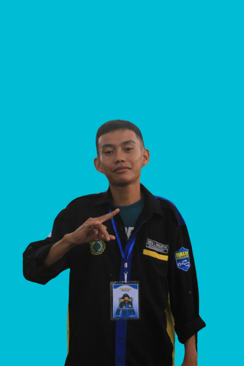
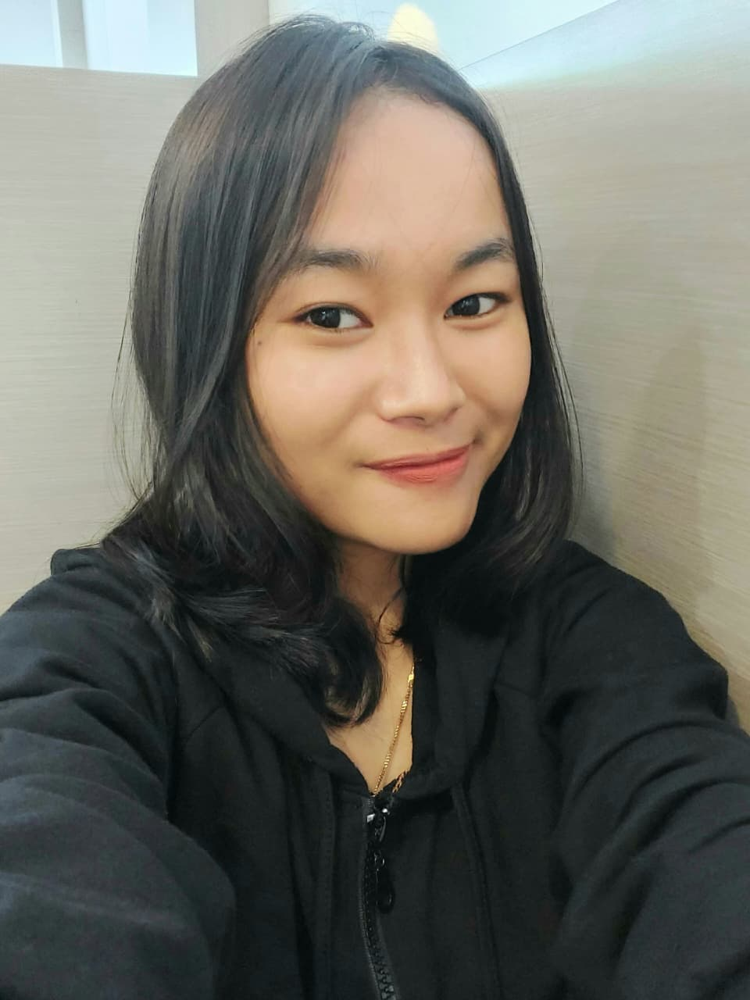
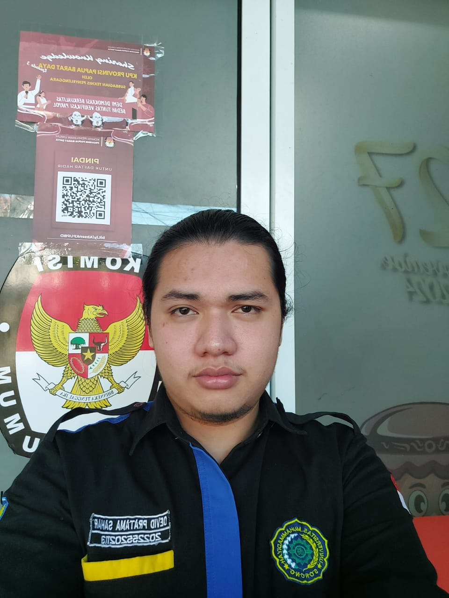
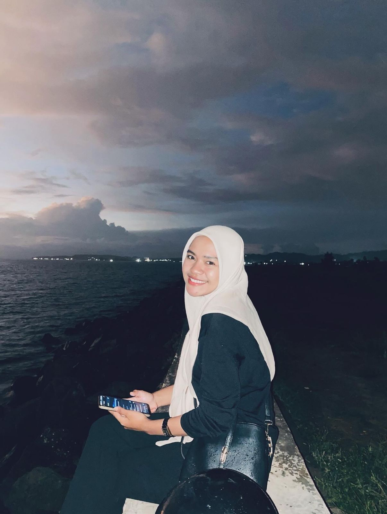
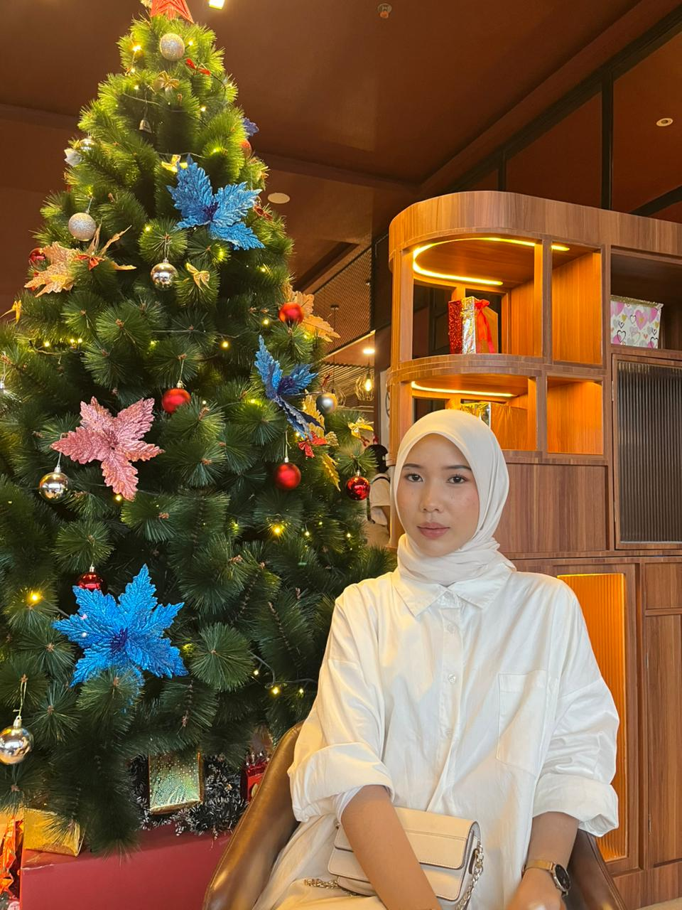
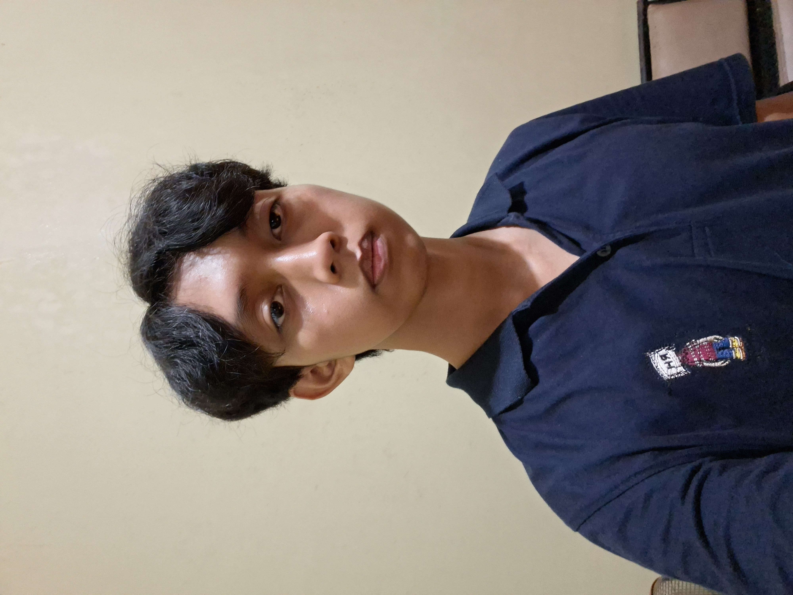

Visi & Misi
KampusEval hadir sebagai solusi atas tantangan evaluasi kegiatan manual yang sering kali tidak terdokumentasi dengan baik. Kami ingin menciptakan ekosistem di mana setiap masukan peserta dapat diolah menjadi data yang berharga.
Dengan teknologi cloud, kami memastikan transparansi dan aksesibilitas data bagi pengelola kegiatan maupun pimpinan kampus.

Tim Pengembang

Hizkia Imanuel Simanjuntak
Koordinator Utama & Penanggung Jawab Program
Berperan sebagai pengarah utama dalam perencanaan dan pelaksanaan KampusEval, serta memastikan seluruh proses pengembangan sistem berjalan sesuai dengan tujuan evaluasi kegiatan kampus.

Diajeng Ganis Samantha Murpi
Penyusun Konsep & Dokumentasi Program
Bertanggung jawab dalam penyusunan konsep sistem serta pendokumentasian alur dan kebutuhan evaluasi, sehingga informasi yang disajikan dapat dipahami dengan jelas oleh pengguna.

Devid Pratama Sahar
Pengelola Interaksi & Pengalaman Pengguna
Berperan dalam memastikan sistem mudah digunakan oleh pengguna, khususnya dalam proses pengisian evaluasi dan penyampaian masukan kegiatan kampus.

Aan Marhayani Warfandu
Pendukung Pelaksanaan & Pengelolaan Program
Bertugas mendukung kelancaran pelaksanaan program secara keseluruhan serta membantu memastikan sistem dapat digunakan secara optimal dalam konteks kegiatan kampus.

Ismi Ramlah Rumagoran
Peninjau Kualitas & Kesesuaian Sistem
Melakukan peninjauan terhadap fungsi sistem secara menyeluruh untuk memastikan KampusEval berjalan sesuai dengan kebutuhan pengguna dan tujuan pengembangan program.

Muhammad Zhaky Arkan
Analis Kebutuhan & Evaluasi Sistem
Berperan dalam menganalisis kebutuhan pengguna dan konteks kegiatan kampus, serta memastikan sistem evaluasi yang dikembangkan relevan dan tepat guna.
Identitas Akademik
Sistem ini dikembangkan oleh mahasiswa Program Studi Teknologi Informasi di Sorong sebagai bagian dari proyek akhir mata kuliah sistem cerdas yang mengedepankan nilai-nilai akademis dan profesionalisme.
Tahun Pengembangan: 2026